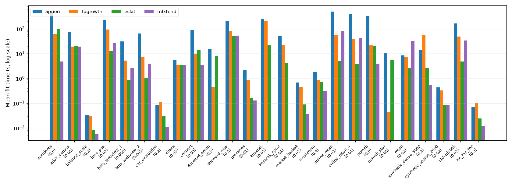
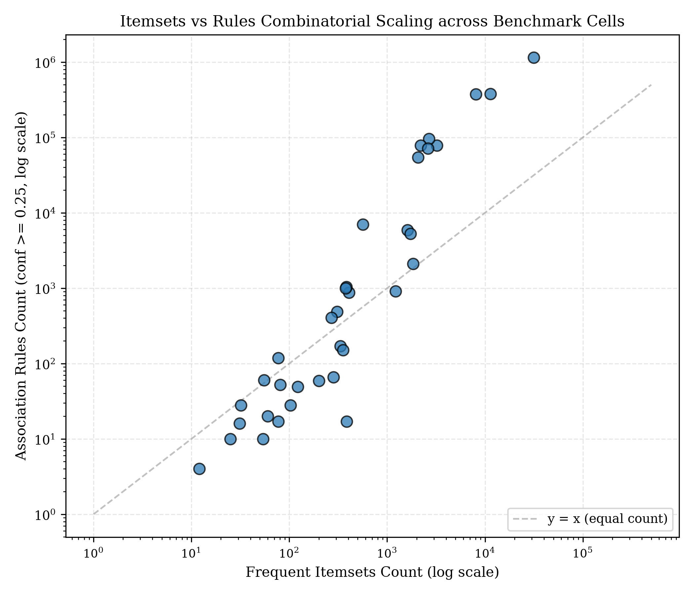

Paper preview — readable rendering of paper.tex
(results for 23 of 25 datasets, PC campaign 2026-10-30). The compiled PDF
remains the canonical version once LaTeX is available. The two pending
datasets (bms_pos, t10i4d100k) are marked in the results section, not
estimated.
skarm: A scikit-learn-Compatible Estimator for Association-Rule Mining with Auditable Pruning
Ms. Dudigam Ramya1, Gontla Venkata Anvitha1, Kamma Giridhar1, Abhishek Kumar1, Paladagula Venkata Rajeev1
1Department of Computer Science and Engineering, KL University, Vijayawada, India
Capstone project KLCAP-2026-00340
Abstract
Frequent-itemset mining and association-rule mining are standard tools for market-basket analysis, recommendation, and categorical pattern discovery, yet current scikit-learn offers no native estimator for them: the feature request (issue #32712) was closed as “not planned” on scope grounds, with maintainers directing the work to a separate, scikit-learn-compatible library. The closest existing library, mlxtend, provides the mining functions but not an estimator API, and it provides no Eclat. We present skarm, a Python library that packages three classic miners — Apriori, FP-Growth, and Eclat — behind a single scikit-learn-style estimator with deterministic rule ordering, explicit candidate-count telemetry, and a bounded-generation mode that reports truncation instead of silently returning partial results. The evaluation protocol compares all three engines plus an mlxtend baseline at matched support thresholds on 25 datasets, with a 30-trial statistical protocol on an 8-dataset subset and exact itemset-agreement checks on every cell. Across 23 datasets (1,515 trial records on one Windows PC), all 145 compared engine pairs agree exactly on frequent itemsets; at each dataset's primary threshold, apriori fastest on none; fpgrowth fastest on 5 of 23; eclat fastest on 18 of 23, 2 cells timed out at the 600 s cap, and mlxtend could not run 6 cells for stated reasons (3 dense-cap skips, 3 empty-input errors). Two datasets (bms_pos, t10i4d100k) are still pending.
1. Introduction
Problem
Association-rule mining finds patterns of the form X ⇒ Y over transactions, where X and Y are disjoint itemsets. The task is unsupervised: unlike classification, there is no target variable, and the output is a set of patterns whose size can explode combinatorially as the support threshold falls. Any library that offers this task must therefore answer three questions honestly: which patterns were found, whether the output is complete, and what it cost. Most teaching implementations answer none of them.
The scikit-learn scope story, stated honestly
In November 2025 a community member asked scikit-learn for a native Apriori estimator (issue #32712 [7]), proposing a new sklearn.association module with fit() for frequent itemsets and rule generation with support, confidence, lift, and leverage. The maintainers closed the request on 16 November 2025 as “not planned”, ruling that pattern mining sits outside the scope of machine learning as defined in scikit-learn, and suggested the work belonged in scikit-mine or scikit-learn-contrib. An earlier discussion (#2662, 2013–2014 [6]) had reached the same conclusion. skarm therefore does not claim to implement a requested scikit-learn feature, and it does not claim sklearn endorsement. It follows the maintainers' advice: a separate library that is compatible with scikit-learn's API conventions (estimator with fit, fitted attributes with a trailing underscore, parameter inspection), so it can sit beside scikit-learn pipelines rather than inside them.
Capstone objectives
This work is the KL University capstone project KLCAP-2026-00340. Its objectives, as registered in the portal specification, are: (O1) build an Apriori baseline; (O2) add FP-Growth and Eclat behind one estimator; (O3) make pruning auditable through candidate counts and a bounded mode; (O4) verify correctness against independent implementations; and (O5) evaluate on a broad, documented dataset collection. The portal contract additionally requires a held-out partition reserved before tuning (acceptance criterion AC-3), negative tests NT-1 to NT-6, and KPI evidence including a 30-trial statistical protocol (KPI-4) and a frozen two-rater rubric (KPI-2); Section 5 maps each requirement to its evidence.
Contributions
- One estimator, three engines: Apriori, FP-Growth, and Eclat with identical inputs, outputs, and rule metrics, so comparisons are between algorithms, not between APIs.
- Auditability by default: deterministic rule ordering, peak candidate counts, a degraded-mode flag with truncation counts, and recall against the exact result whenever bounded mode is used. Bounded output is never presented as exact.
- A documented 25-dataset evaluation collection with measured statistics and provenance for every file (Section 4), and a benchmark protocol (Section 5) whose thresholds, trial counts, timeout rule, and correctness gate are fixed before the results are read.
2. Related work
Classic algorithms
Apriori [1] mines level by level, generating candidates from the frequent itemsets of the previous level and pruning with the anti-monotone property: every subset of a frequent itemset is frequent, so any superset of an infrequent itemset can be discarded without counting. FP-Growth [2, 3] compresses the database into an FP-tree in two scans and mines it recursively without candidate generation. Eclat [4] uses a vertical layout: each item carries its tidset (transaction-ID set), support is the size of a tidset intersection, and the search space is decomposed into equivalence classes traversed depth-first; diffsets are the later dense-data refinement that stores shrinking differences instead of full tidsets. The worst case is exponential in the number of items for all exact miners; cost lands differently — Apriori in candidates plus one scan per level, FP-Growth in tree and conditional-tree memory, Eclat in tidset and diffset memory. Secondary sources disagree on which engine wins on dense versus sparse data, so this paper asserts no universal winner and reports its own matched-threshold measurements instead.
Libraries and baselines
mlxtend [9] is the honest baseline. Its frequent_patterns module provides Apriori, FP-Growth, FP-Max, and H-Mine plus association_rules with support, confidence, lift, leverage, conviction, and Zhang's metric, but as functions over a one-hot DataFrame, not as estimators: no fit / get_params / clone, no Pipeline placement, and no Eclat. Its documentation's toy timing (microseconds on a five-transaction example) is not a benchmark and is never quoted here as a speedup claim. scikit-mine [8] is the ecosystem home the sklearn maintainers pointed to; it offers SLIM, LCM, and LCMMax (closed, maximal, and MDL-compressed patterns) plus periodic and emerging-pattern miners, but not plain Apriori, FP-Growth, and Eclat with rule metrics, and its master branch showed no commits after May 2023 at the time of writing (to be re-checked at submission). SPMF [10] supplies the FIMI dataset collection and reference miners (including LCM-family algorithms); modern miners such as FIN, PrePost+, and LCMFreq [12] are stronger recent baselines and are acknowledged as future work in Section 7 rather than silently omitted. A 2022 challenges survey [11] frames why pattern mining remains an open systems problem (scalability, interestingness, dynamic data) rather than a solved 1990s topic.
What skarm adds
skarm invents no mining algorithm. Its contribution is the package around the three classics: one estimator API, deterministic outputs, candidate telemetry, a bounded mode that reports its own truncation, and metric definitions with stated edge-case conventions (Section 3). That package is what the sklearn issue asked for in API terms, and what mlxtend does not provide in estimator terms.
3. Methods
Definitions and rule metrics
A transaction database D contains N transactions over an item universe I. For an itemset X, supp(X) is the fraction of transactions containing X. A rule X ⇒ Y (with X ∩ Y = ∅) is evaluated at a minimum support threshold and a minimum confidence threshold. Table 1 defines the metrics skarm reports; the edge cases are part of the definition, not footnotes, because they change rule counts.
Table 1. Rule metrics reported by skarm, with edge-case conventions (definitions per [13]).
| Confidence | supp(X ∪ Y) / supp(X) | =1 when every X has Y |
|---|
| Lift | confidence / supp(Y) | 1 = independence |
| Leverage | supp(X ∪ Y) - supp(X)supp(Y) | 0 = independence |
| Conviction | (1 - supp(Y)) / (1 - confidence) | ∞ at confidence 1 (kept as ∞, never dropped) |
| Zhang's metric | leverage scaled to [-1, 1] | 0 when its denominator is 0 |
The three engines
Apriori generates candidates level by level and counts each level with a database scan, pruning by the anti-monotone property. FP-Growth builds an FP-tree ordered by descending item frequency, then mines conditional trees recursively; it performs no candidate generation but its memory is the tree plus conditional trees. Eclat intersects tidsets depth-first within equivalence classes, a decomposition originating in [5] and developed in [4]; its memory is the tidsets (or diffsets on dense data). All three engines consume the same pre-encoded sparse matrix and return the same fitted attributes, so a difference in output is a bug, not an API difference — which is exactly what the correctness gate in Section 5 checks.
Estimator API
AssociationRulesEstimator exposes min_support, metric (default confidence), min_threshold (default 0.25), algorithm (one of apriori, fpgrowth, eclat), max_candidates (default 2,000,000), sparse_output, and on_candidate_explosion (default degrade). After fit(X), the fitted attributes are frequent_itemsets_ (itemset → support), rules_, is_degraded_ (whether bounded mode truncated generation), and pruning_policy_.peak_candidate_count. TransactionEncoder converts transaction lists, generators, and DataFrames into the sparse matrix consumed by fit; encoding time is reported separately from mining time, never folded into it. The command-line interface and the interactive explorer wrap the same estimator, so results do not depend on which front end was used.
Pruning and the safe-degradation governor
Exact mining can explode: the candidate count at some level can exceed any reasonable budget, especially on dense data at low support. When max_candidates is exceeded and the governor is in degrade mode, generation stops at the cap and the estimator sets is_degraded_, records how many candidates were truncated, and the evaluation reports recall against the exact result. A degraded run is therefore identifiable in every table, and its speed is never compared against exact runs as if it were exact. Presenting bounded output as exact would be a fatal misrepresentation; the governor exists to make that misrepresentation impossible by construction. The pruning-policy ablation (bounded versus exact, with truncation counts and recall) is listed as pending gap-closure work in Section 7, and its results will be added when run.
Determinism
Rule output is sorted by a fixed key, so repeated runs on the same input produce identical rule orderings. The acceptance suite asserts this (negative test NT-5), and the benchmark's correctness gate compares itemset sets (not just counts) across engines, so a count that matches while the sets differ cannot hide.
Architecture
Figure 1 shows the system: transactions are encoded once, mined by the selected engine under the pruning governor, and emitted as itemsets plus rules with full telemetry. Figure 2 shows the evaluation pipeline, including the correctness gate that every benchmark cell must pass. Figure 3 is a worked toy example — the three-transaction example from the sklearn issue itself — included only to make the FP-tree construction concrete; it is labelled illustrative and no measured claim rests on it.
Figure 1 — diagram (renders in the compiled PDF)
Figure 1. System architecture. One encoding feeds all three engines; telemetry is emitted alongside results, not reconstructed afterwards.
Figure 2 — diagram (renders in the compiled PDF)
Figure 2. Benchmark pipeline. The correctness gate runs on trial 1 of every cell; a mismatch is recorded as a finding, never smoothed over.
Figure 3 — diagram (renders in the compiled PDF)
Figure 3. Illustrative FP-tree for the toy transactions milk, bread, eggs, milk, bread, bread, butter at minimum support 0.5: frequent items are bread (3) and milk (2); the tree has a single branch. Illustrative only — no measured claim rests on this example.
4. Datasets
Table 2 lists the 25 datasets used. Every statistic was computed by parsing the stored file (transaction count, unique-item count, average transaction length, density = average length / unique items × 100); none was copied from a web table. Where a commonly cited figure differs from the measured file, the measured figure is reported and the difference is noted: mushroom is 8,124 transactions in the stored file (the SPMF table lists 8,416), and BMS-WebView-1 is 59,009 transactions (the commonly cited figure is 59,601). The accidents file carries a leading header line (340183 468) excluded from counts. Kosarak.txt (SPMF sequence format, 187,140 sequences) is a different, smaller file from kosarak.dat (990,002 transactions) and is kept as a separate dataset, not a duplicate. Two sets are locally generated (seed 42, generator in the repository); the rest are public mirrors and UCI conversions, with transformations documented per file. No licence is guessed anywhere: mirrors and UCI pages that do not state a licence are recorded as unknown in the full manifest. Access date for all 25 datasets is 2026-10-29. The complete manifest (source URL, size, licence, owner, exclusions, transformations per file) is in DATASET_INVENTORY.md in the repository.
Table 2. Evaluation datasets. N = transactions, M = unique items, L̄ = average transaction length, density = L̄/M × 100. All statistics measured by parsing the stored files.
| Chess | 3,196 | 75 | 37.00 | 49.33 | dense |
|---|
| Retail | 88,162 | 16,470 | 10.31 | 0.06 | retail, sparse |
| Market basket | 7,501 | 119 | 3.91 | 3.29 | retail, sparse |
| Mushroom | 8,124 | 119 | 23.00 | 19.33 | dense |
| Connect | 67,557 | 129 | 43.00 | 33.33 | dense |
| Accidents | 340,183 | 468 | 33.81 | 7.22 | dense, traffic |
| Pumsb | 49,046 | 2,113 | 74.00 | 3.50 | census, dense |
| Pumsb_star | 49,046 | 2,088 | 50.48 | 2.42 | census |
| Kosarak (FIMI) | 990,002 | 41,270 | 8.10 | 0.02 | click-stream |
| Kosarak (SPMF) | 187,140 | 28,252 | 8.03 | 0.03 | click-stream |
| BMS-POS | 515,596 | 1,657 | 6.53 | 0.39 | click-stream |
| BMS-WebView-1 | 59,009 | 494 | 2.51 | 0.51 | click-stream |
| BMS-WebView-2 | 77,512 | 3,340 | 4.62 | 0.14 | click-stream |
| T10I4D100K | 100,000 | 870 | 10.10 | 1.16 | synthetic |
| Online Retail | 20,728 | 3,942 | 25.12 | 0.64 | retail |
| Tic-tac-toe | 958 | 29 | 10.00 | 34.48 | categorical |
| Car evaluation | 1,728 | 25 | 7.00 | 28.00 | categorical |
| Balance scale | 625 | 23 | 5.00 | 21.74 | categorical |
| Adult census | 32,561 | 224 | 13.87 | 6.19 | census |
| NIPS papers | 1,500 | 12,375 | 497.54 | 4.02 | document-word |
| Enron emails | 39,861 | 28,099 | 93.08 | 0.33 | document-word |
| Synthetic sparse | 2,000 | 499 | 7.42 | 1.49 | synthetic |
| Synthetic dense | 5,000 | 50 | 30.56 | 61.12 | synthetic |
| Online Retail II | 22,103 | 4,317 | 22.62 | 0.52 | retail |
5. Experimental setup
The protocol was fixed before results were read. Thresholds are matched across engines within each dataset (Table 3); a threshold is never chosen per engine. Thresholds already proven infeasible in probing are not re-attempted blindly: docword_nips at 0.30 timed out for all four engines, connect at 0.90 timed out for Apriori and killed the FP-Growth process, and BMS-POS at 0.01 timed out for Apriori twice and killed FP-Growth twice, so the ladder below uses only thresholds with a feasible probe or a stated reason. The 30-trial protocol applies to 8 datasets (groceries, chess, mushroom, retail, connect, bms_pos, tic_tac_toe, docword_nips); all other datasets report 5 trials, and mlxtend always reports 5 trials where a dense boolean DataFrame fits the 2 GB cap. Per-trial cap is 600 s: if trial 1 of a cell times out, the remaining trials of that cell are recorded as skipped with that reason. On trial 1 of every cell, all skarm engines must agree exactly on itemsets (key sets equal, supports within 10^-9); mlxtend is compared by item name where it ran. Runtime is time.perf_counter around fit on the pre-encoded matrix; encoding time is reported separately. Memory is peak RSS sampled every 10 ms minus the pre-trial baseline. Rule parameters are metric confidence, minimum threshold 0.25; estimator parameters are max_candidates = 2,000,000, sparse output, degrade on explosion. Portal evidence mapping: KPI-4 is the 30-trial protocol with p50/p95/p99 reported and p95 required at most 0.8× the baseline; KPI-2 is the rubric (at least 80/100, frozen before objective O2, two independent raters); AC-3 is the held-out partition reserved before tuning; KPI-1, KPI-3, KPI-5, and KPI-6 follow the portal contract as recorded in the acceptance report. The machine, library versions, and results commit are recorded in Appendix A from the campaign metadata. Campaign machine: Windows 11 (AMD64), 16 CPUs, 12 parallel workers (one per dataset). Python 3.12.10, scikit-learn 1.9.1, mlxtend 0.25.0, NumPy 2.5.4, pandas 3.1.0, SciPy 1.18.1. Per-trial cap 600 s; rules at confidence ≥ 0.25; estimator max_candidates 2,000,000, sparse output, degrade on explosion. Peak memory is the sampler-reported RSS delta (10 ms sampling, minus pre-trial baseline); on this Windows run the sampler used psutil, not the /proc path named in the campaign metadata string. Results: commit 73d44df, 1,515 records, 23 datasets.
Table 3. Support thresholds per dataset (matched across engines), with the reason each ladder was chosen. Thresholds proven infeasible in probing are excluded, not hidden.
| Chess | 0.85 | dense; lower thresholds explode rule counts |
|---|
| Retail | 0.03, 0.02 | verified point plus lower-support comparison |
| Market basket | 0.03, 0.02 | previously verified with all engines |
| Mushroom | 0.40 | previously verified point; dense |
| Connect | 0.95 | 0.90 already failed in probes |
| Accidents | 0.50, 0.60 | 0.50 probed: FP-Growth/Eclat OK, Apriori timeout |
| Pumsb | 0.90 | dense, very long transactions; high threshold only |
| Pumsb_star | 0.85 | dense census variant; high threshold only |
| Kosarak (FIMI) | 0.01, 0.005 | very sparse despite 990k transactions |
| Kosarak (SPMF) | 0.01 | smaller variant, single threshold |
| BMS-POS | 0.02 | 0.01 already failed in probes |
| BMS-WebView-1 | 0.01, 0.005 | very short transactions; low thresholds safe |
| BMS-WebView-2 | 0.01, 0.005 | short transactions; low thresholds safe |
| T10I4D100K | 0.01, 0.02 | published comparison range for this set |
| Online Retail | 0.02, 0.01 | long transactions; two points |
| Tic-tac-toe | 0.50, 0.30 | very small; both points cheap |
| Car evaluation | 0.30, 0.20 | very small; both points cheap |
| Balance scale | 0.30, 0.20 | very small; both points cheap |
| Adult census | 0.10, 0.05 | medium density; two points |
| NIPS papers | 0.50 | 0.50 probed all-OK; 0.30 timed out for all |
| Enron emails | 0.70, 0.50 | 26× larger than NIPS; higher thresholds |
| Synthetic sparse | 0.05, 0.02 | small, fast; two points |
| Synthetic dense | 0.50, 0.30 | small, dense; two points |
| Online Retail II | 0.02, 0.01 | same shape as Online Retail |
6. Results and discussion
Analytical verification and negative-test audit
Before any benchmark timing is trusted, the implementation was verified against an independent oracle and a negative-test suite. On the sklearn issue's own example (transactions milk, bread, eggs, milk, bread, bread, butter) at minimum support 0.5, mlxtend gives bread support 1.0, milk 0.667, and milk, bread 0.667, with rule milk ⇒ bread at confidence 1.0 and lift 1.0; skarm agrees exactly. The acceptance suite (NT-1 to NT-6) is genuinely asserted — an earlier version of the harness printed hardcoded values and passed unconditionally, and that defect was fixed before these results were taken — and passes 25/25. Brute-force cross-checks (4 random matrices × 2 thresholds × weighted/unweighted × 3 miners) show 0 mismatches. The bug-fix history (including the Eclat maximum-length off-by-one, loader defects on the accidents header, SPMF tokens, and tab-separated input, and the unstable rule sort) is recorded in the repository history (commits ff03b451, dd22782f, 904b19b3).
Benchmark campaign results
Results cover 23 of the 25 datasets. The two remaining datasets, bms_pos and t10i4d100k, have data files in the repository but no trial records yet; they will be added by a re-run, not by estimation. Timings are fit only (encoding excluded); memory is the sampler-reported peak RSS delta in MB. One row per dataset × threshold × engine; cells with no completed trial show their reason instead of numbers.
Table 4. Per-cell timing and output counts. Mean, median (p50) and p95 are over OK trials only.
| ∩tionPer-cell timing and output counts. Mean, median (p50) and p95 are over OK trials only. |
|---|
| accidents | 0.5 | fpgrowth | 5 | 156.5 | 157.1 | 181.3 | 955.1 | 8057 | 375774 | no | — |
| accidents | 0.5 | eclat | 5 | 288.2 | 273.6 | 333.4 | 1738.2 | 8057 | 375774 | no | — |
| accidents | 0.5 | mlxtend | 5 | 22.06 | 21.91 | 22.81 | 5494.2 | 8057 | 375774 | no | — |
| accidents | 0.6 | apriori | 5 | 473.5 | 475.2 | 478.2 | 1860.6 | 2074 | 54170 | no | — |
| accidents | 0.6 | fpgrowth | 5 | 60.92 | 61.31 | 62.38 | 90.38 | 2074 | 54170 | no | — |
| accidents | 0.6 | eclat | 5 | 97.93 | 97.65 | 100.3 | 1351.0 | 2074 | 54170 | no | — |
| accidents | 0.6 | mlxtend | 5 | 4.76 | 4.75 | 5.00 | 1470.8 | 2074 | 54170 | no | — |
| adult_census | 0.05 | apriori | 5 | 76.62 | 70.04 | 105.1 | 957.5 | 11390 | 376953 | no | — |
| adult_census | 0.05 | fpgrowth | 5 | 19.04 | 18.84 | 19.83 | 950.9 | 11390 | 376953 | no | — |
| adult_census | 0.05 | eclat | 5 | 20.95 | 20.34 | 24.01 | 887.9 | 11390 | 376953 | no | — |
| adult_census | 0.05 | mlxtend | 5 | 19.14 | 19.06 | 20.09 | 717.0 | 11390 | 376953 | no | — |
| adult_census | 0.1 | apriori | 5 | 23.36 | 20.41 | 31.18 | 160.6 | 3216 | 78167 | no | — |
| adult_census | 0.1 | fpgrowth | 5 | 5.53 | 5.55 | 5.58 | 150.6 | 3216 | 78167 | no | — |
| adult_census | 0.1 | eclat | 5 | 5.37 | 5.36 | 5.44 | 142.1 | 3216 | 78167 | no | — |
| adult_census | 0.1 | mlxtend | 5 | 3.48 | 3.48 | 3.55 | 208.8 | 3216 | 78167 | no | — |
| balance_scale | 0.2 | apriori | 5 | 0.033 | 0.032 | 0.039 | 0.064 | 22 | 0 | no | — |
| balance_scale | 0.2 | fpgrowth | 5 | 0.032 | 0.031 | 0.033 | 0.066 | 22 | 0 | no | — |
| balance_scale | 0.2 | eclat | 5 | 0.009 | 0.008 | 0.012 | 0.170 | 22 | 0 | no | — |
| balance_scale | 0.2 | mlxtend | 5 | 0.006 | 0.006 | 0.006 | 0.020 | 22 | 0 | no | — |
| balance_scale | 0.3 | apriori | 5 | 0.022 | 0.021 | 0.024 | 0.256 | 2 | 0 | no | — |
| balance_scale | 0.3 | fpgrowth | 5 | 0.022 | 0.022 | 0.024 | 0.018 | 2 | 0 | no | — |
| balance_scale | 0.3 | eclat | 5 | 0.008 | 0.008 | 0.009 | 0.024 | 2 | 0 | no | — |
| balance_scale | 0.3 | mlxtend | 5 | 0.017 | 0.006 | 0.062 | 0.210 | 2 | 0 | no | — |
| bms_webview_1 | 0.005 | apriori | 5 | 31.15 | 29.17 | 44.22 | 9.97 | 201 | 59 | no | — |
| bms_webview_1 | 0.005 | fpgrowth | 5 | 5.31 | 5.24 | 6.58 | 2.92 | 201 | 59 | no | — |
| bms_webview_1 | 0.005 | eclat | 5 | 0.860 | 0.875 | 0.985 | 8.52 | 201 | 59 | no | — |
| bms_webview_1 | 0.005 | mlxtend | 5 | 2.68 | 2.51 | 3.62 | 1895.9 | 201 | 59 | no | — |
| bms_webview_1 | 0.01 | apriori | 5 | 6.85 | 6.85 | 6.94 | 14.66 | 77 | 17 | no | — |
| bms_webview_1 | 0.01 | fpgrowth | 5 | 2.30 | 2.29 | 2.36 | 2.47 | 77 | 17 | no | — |
| bms_webview_1 | 0.01 | eclat | 5 | 0.377 | 0.379 | 0.388 | 8.23 | 77 | 17 | no | — |
| bms_webview_1 | 0.01 | mlxtend | 5 | 0.397 | 0.409 | 0.411 | 401.3 | 77 | 17 | no | — |
| bms_webview_2 | 0.005 | apriori | 5 | 64.30 | 63.04 | 70.42 | 14.63 | 408 | 877 | no | — |
| bms_webview_2 | 0.005 | fpgrowth | 5 | 7.66 | 6.59 | 10.76 | 2.38 | 408 | 877 | no | — |
| bms_webview_2 | 0.005 | eclat | 5 | 1.09 | 1.07 | 1.16 | 9.18 | 408 | 877 | no | — |
| bms_webview_2 | 0.005 | mlxtend | 5 | 3.97 | 4.04 | 4.27 | 3423.4 | 408 | 877 | no | — |
| bms_webview_2 | 0.01 | apriori | 5 | 12.51 | 11.03 | 16.67 | 16.28 | 81 | 52 | no | — |
| bms_webview_2 | 0.01 | fpgrowth | 5 | 4.79 | 4.14 | 7.35 | 1.67 | 81 | 52 | no | — |
| bms_webview_2 | 0.01 | eclat | 5 | 0.947 | 0.849 | 1.34 | 2.65 | 81 | 52 | no | — |
| bms_webview_2 | 0.01 | mlxtend | 5 | 1.74 | 1.72 | 1.94 | 588.4 | 81 | 52 | no | — |
| car_evaluation | 0.2 | apriori | 5 | 0.087 | 0.087 | 0.088 | 0.104 | 31 | 16 | no | — |
| car_evaluation | 0.2 | fpgrowth | 5 | 0.112 | 0.110 | 0.119 | 0.260 | 31 | 16 | no | — |
| car_evaluation | 0.2 | eclat | 5 | 0.031 | 0.029 | 0.037 | 0.078 | 31 | 16 | no | — |
| car_evaluation | 0.2 | mlxtend | 5 | 0.011 | 0.011 | 0.012 | 0.016 | 31 | 16 | no | — |
| car_evaluation | 0.3 | apriori | 5 | 0.091 | 0.069 | 0.178 | 10.04 | 12 | 4 | no | — |
| car_evaluation | 0.3 | fpgrowth | 5 | 0.073 | 0.071 | 0.079 | 0.016 | 12 | 4 | no | — |
| car_evaluation | 0.3 | eclat | 5 | 0.026 | 0.026 | 0.027 | 0.060 | 12 | 4 | no | — |
| car_evaluation | 0.3 | mlxtend | 5 | 0.009 | 0.008 | 0.010 | 0.062 | 12 | 4 | no | — |
| chess | 0.85 | apriori | 30 | 5.76 | 5.75 | 6.96 | 167.4 | 2669 | 95482 | no | — |
| chess | 0.85 | fpgrowth | 30 | 3.49 | 3.45 | 3.85 | 105.7 | 2669 | 95482 | no | — |
| chess | 0.85 | eclat | 30 | 3.48 | 3.47 | 3.58 | 93.04 | 2669 | 95482 | no | — |
| chess | 0.85 | mlxtend | 5 | 3.50 | 3.52 | 3.57 | 19.94 | 2669 | 95482 | no | — |
| connect | 0.95 | apriori | 30 | 87.87 | 88.72 | 110.1 | 304.9 | 2201 | 78376 | no | — |
| connect | 0.95 | fpgrowth | 30 | 10.05 | 9.73 | 13.77 | 40.96 | 2201 | 78376 | no | — |
| connect | 0.95 | eclat | 30 | 14.22 | 14.30 | 15.30 | 191.0 | 2201 | 78376 | no | — |
| connect | 0.95 | mlxtend | 5 | 3.44 | 3.47 | 3.56 | 284.2 | 2201 | 78376 | no | — |
| docword_enron | 0.5 | apriori | 5 | 14.75 | 14.36 | 16.45 | 166.6 | 0 | 0 | no | — |
| docword_enron | 0.5 | fpgrowth | 5 | 0.446 | 0.445 | 0.455 | 7.64 | 0 | 0 | no | — |
| docword_enron | 0.5 | eclat | 5 | 8.37 | 8.04 | 9.49 | 17.74 | 0 | 0 | no | — |
| docword_enron | 0.5 | mlxtend | 0 | — | — | — | — | — | — | — | mlxtend: empty input |
| docword_enron | 0.7 | apriori | 5 | 14.25 | 14.24 | 14.36 | 191.1 | 0 | 0 | no | — |
| docword_enron | 0.7 | fpgrowth | 5 | 0.441 | 0.444 | 0.448 | 1.05 | 0 | 0 | no | — |
| docword_enron | 0.7 | eclat | 5 | 7.96 | 7.96 | 7.99 | 17.72 | 0 | 0 | no | — |
| docword_enron | 0.7 | mlxtend | 0 | — | — | — | — | — | — | — | mlxtend: empty input |
| docword_nips | 0.5 | apriori | 30 | 209.5 | 196.2 | 269.3 | 2672.8 | 31582 | 1148468 | no | — |
| docword_nips | 0.5 | fpgrowth | 30 | 81.75 | 81.34 | 85.88 | 2560.6 | 31582 | 1148468 | no | — |
| docword_nips | 0.5 | eclat | 30 | 50.23 | 44.48 | 90.98 | 2345.5 | 31582 | 1148468 | no | — |
| docword_nips | 0.5 | mlxtend | 5 | 53.91 | 49.35 | 75.60 | 1079.8 | 31582 | 1148468 | no | — |
| groceries | 0.01 | apriori | 30 | 2.18 | 2.16 | 2.34 | 1.63 | 333 | 170 | no | — |
| groceries | 0.01 | fpgrowth | 30 | 0.871 | 0.871 | 0.938 | 1.15 | 333 | 170 | no | — |
| groceries | 0.01 | eclat | 30 | 0.166 | 0.160 | 0.203 | 0.588 | 333 | 170 | no | — |
| groceries | 0.01 | mlxtend | 5 | 0.128 | 0.126 | 0.142 | 107.0 | 333 | 170 | no | — |
| groceries | 0.02 | apriori | 30 | 1.07 | 1.07 | 1.13 | 0.841 | 122 | 49 | no | — |
| groceries | 0.02 | fpgrowth | 30 | 0.686 | 0.682 | 0.762 | 0.759 | 122 | 49 | no | — |
| groceries | 0.02 | eclat | 30 | 0.126 | 0.127 | 0.138 | 0.246 | 122 | 49 | no | — |
| groceries | 0.02 | mlxtend | 5 | 0.055 | 0.052 | 0.066 | 33.30 | 122 | 49 | no | — |
| kosarak | 0.005 | apriori | 0 | — | — | — | — | — | — | — | timeout 600 s |
| kosarak | 0.005 | fpgrowth | 5 | 473.9 | 477.5 | 481.2 | 69.29 | 1618 | 5890 | no | — |
| kosarak | 0.005 | eclat | 5 | 28.30 | 28.23 | 28.73 | 349.2 | 1618 | 5890 | no | — |
| kosarak | 0.01 | apriori | 5 | 250.8 | 249.9 | 253.1 | 690.8 | 383 | 1037 | no | — |
| kosarak | 0.01 | fpgrowth | 5 | 198.9 | 199.3 | 203.4 | 76.03 | 383 | 1037 | no | — |
| kosarak | 0.01 | eclat | 5 | 21.29 | 21.43 | 22.39 | 277.1 | 383 | 1037 | no | — |
| kosarak_spmf | 0.01 | apriori | 5 | 50.47 | 50.58 | 51.34 | 95.81 | 377 | 999 | no | — |
| kosarak_spmf | 0.01 | fpgrowth | 5 | 23.02 | 23.25 | 23.60 | 4.61 | 377 | 999 | no | — |
| kosarak_spmf | 0.01 | eclat | 5 | 4.24 | 4.25 | 4.32 | 25.35 | 377 | 999 | no | — |
| market_basket | 0.02 | apriori | 5 | 0.688 | 0.694 | 0.710 | 0.020 | 103 | 28 | no | — |
| market_basket | 0.02 | fpgrowth | 5 | 0.449 | 0.434 | 0.524 | 0.420 | 103 | 28 | no | — |
| market_basket | 0.02 | eclat | 5 | 0.089 | 0.088 | 0.102 | 0.020 | 103 | 28 | no | — |
| market_basket | 0.02 | mlxtend | 5 | 0.036 | 0.036 | 0.039 | 23.70 | 103 | 28 | no | — |
| market_basket | 0.03 | apriori | 5 | 0.449 | 0.425 | 0.556 | 0.026 | 54 | 10 | no | — |
| market_basket | 0.03 | fpgrowth | 5 | 0.370 | 0.368 | 0.401 | 0.426 | 54 | 10 | no | — |
| market_basket | 0.03 | eclat | 5 | 0.076 | 0.075 | 0.085 | 0.436 | 54 | 10 | no | — |
| market_basket | 0.03 | mlxtend | 5 | 0.023 | 0.020 | 0.029 | 8.73 | 54 | 10 | no | — |
| mushroom | 0.4 | apriori | 30 | 1.78 | 1.78 | 2.00 | 4.04 | 565 | 7020 | no | — |
| mushroom | 0.4 | fpgrowth | 30 | 0.849 | 0.848 | 0.900 | 1.97 | 565 | 7020 | no | — |
| mushroom | 0.4 | eclat | 30 | 0.718 | 0.714 | 0.777 | 2.52 | 565 | 7020 | no | — |
| mushroom | 0.4 | mlxtend | 5 | 0.298 | 0.292 | 0.338 | 3.91 | 565 | 7020 | no | — |
| online_retail | 0.01 | apriori | 5 | 496.5 | 495.0 | 539.7 | 48.06 | 1840 | 2108 | no | — |
| online_retail | 0.01 | fpgrowth | 5 | 55.79 | 55.89 | 56.52 | 19.52 | 1840 | 2108 | no | — |
| online_retail | 0.01 | eclat | 5 | 4.97 | 4.99 | 5.02 | 5.39 | 1840 | 2108 | no | — |
| online_retail | 0.01 | mlxtend | 5 | 85.08 | 82.62 | 108.5 | 9650.3 | 1840 | 2108 | no | — |
| online_retail | 0.02 | apriori | 5 | 70.87 | 71.01 | 73.18 | 32.43 | 353 | 151 | no | — |
| online_retail | 0.02 | fpgrowth | 5 | 17.99 | 18.07 | 18.17 | 4.78 | 353 | 151 | no | — |
| online_retail | 0.02 | eclat | 5 | 1.92 | 1.91 | 1.97 | 4.74 | 353 | 151 | no | — |
| online_retail | 0.02 | mlxtend | 5 | 1.99 | 1.98 | 2.12 | 2328.7 | 353 | 151 | no | — |
| online_retail_ii | 0.01 | apriori | 5 | 406.1 | 374.1 | 528.6 | 26.67 | 1216 | 911 | no | — |
| online_retail_ii | 0.01 | fpgrowth | 5 | 40.37 | 40.72 | 41.07 | 42.66 | 1216 | 911 | no | — |
| online_retail_ii | 0.01 | eclat | 5 | 3.90 | 3.93 | 3.96 | 6.40 | 1216 | 911 | no | — |
| online_retail_ii | 0.01 | mlxtend | 5 | 42.83 | 41.69 | 50.23 | 9785.3 | 1216 | 911 | no | — |
| online_retail_ii | 0.02 | apriori | 5 | 64.11 | 64.14 | 64.94 | 26.09 | 282 | 66 | no | — |
| online_retail_ii | 0.02 | fpgrowth | 5 | 15.78 | 15.63 | 16.49 | 3.16 | 282 | 66 | no | — |
| online_retail_ii | 0.02 | eclat | 5 | 1.81 | 1.81 | 1.84 | 6.15 | 282 | 66 | no | — |
| online_retail_ii | 0.02 | mlxtend | 5 | 2.30 | 2.15 | 2.67 | 1950.6 | 282 | 66 | no | — |
| pumsb | 0.9 | apriori | 5 | 332.8 | 323.1 | 374.8 | 87.70 | 2607 | 71474 | no | — |
| pumsb | 0.9 | fpgrowth | 5 | 21.34 | 21.23 | 21.74 | 25.96 | 2607 | 71474 | no | — |
| pumsb | 0.9 | eclat | 5 | 19.88 | 20.12 | 20.16 | 222.4 | 2607 | 71474 | no | — |
| pumsb | 0.9 | mlxtend | 5 | 3.90 | 3.97 | 4.08 | 397.6 | 2607 | 71474 | no | — |
| pumsb_star | 0.85 | apriori | 5 | 10.59 | 10.59 | 10.74 | 85.64 | 0 | 0 | no | — |
| pumsb_star | 0.85 | fpgrowth | 5 | 0.044 | 0.046 | 0.054 | 0.290 | 0 | 0 | no | — |
| pumsb_star | 0.85 | eclat | 5 | 5.69 | 5.70 | 5.81 | 17.49 | 0 | 0 | no | — |
| pumsb_star | 0.85 | mlxtend | 0 | — | — | — | — | — | — | — | mlxtend: empty input |
| retail | 0.02 | apriori | 30 | 8.44 | 8.43 | 8.65 | 30.09 | 55 | 60 | no | — |
| retail | 0.02 | fpgrowth | 30 | 7.28 | 7.28 | 7.46 | 0.559 | 55 | 60 | no | — |
| retail | 0.02 | eclat | 30 | 2.58 | 2.36 | 3.52 | 7.43 | 55 | 60 | no | — |
| retail | 0.02 | mlxtend | 5 | 31.90 | 32.20 | 36.84 | 2022.8 | 55 | 60 | no | — |
| retail | 0.03 | apriori | 30 | 7.29 | 7.28 | 7.41 | 31.77 | 32 | 28 | no | — |
| retail | 0.03 | fpgrowth | 30 | 7.21 | 7.23 | 7.58 | 1.06 | 32 | 28 | no | — |
| retail | 0.03 | eclat | 30 | 2.39 | 2.37 | 2.55 | 9.24 | 32 | 28 | no | — |
| retail | 0.03 | mlxtend | 5 | 15.00 | 14.95 | 15.34 | 2667.7 | 32 | 28 | no | — |
| synthetic_dense_5000 | 0.3 | apriori | 5 | 13.67 | 13.62 | 14.23 | 4.93 | 1737 | 5262 | no | — |
| synthetic_dense_5000 | 0.3 | fpgrowth | 5 | 55.95 | 57.17 | 58.87 | 16.32 | 1737 | 5262 | no | — |
| synthetic_dense_5000 | 0.3 | eclat | 5 | 2.58 | 2.53 | 2.73 | 16.05 | 1737 | 5262 | no | — |
| synthetic_dense_5000 | 0.3 | mlxtend | 5 | 0.551 | 0.529 | 0.603 | 380.1 | 1737 | 5262 | no | — |
| synthetic_dense_5000 | 0.5 | apriori | 5 | 1.42 | 1.29 | 2.07 | 13.68 | 60 | 20 | no | — |
| synthetic_dense_5000 | 0.5 | fpgrowth | 5 | 9.90 | 10.43 | 11.64 | 10.63 | 60 | 20 | no | — |
| synthetic_dense_5000 | 0.5 | eclat | 5 | 0.547 | 0.545 | 0.590 | 9.27 | 60 | 20 | no | — |
| synthetic_dense_5000 | 0.5 | mlxtend | 5 | 0.025 | 0.026 | 0.027 | 7.38 | 60 | 20 | no | — |
| synthetic_sparse_2000 | 0.02 | apriori | 5 | 0.441 | 0.445 | 0.473 | 0.826 | 269 | 407 | no | — |
| synthetic_sparse_2000 | 0.02 | fpgrowth | 5 | 0.325 | 0.277 | 0.544 | 12.73 | 269 | 407 | no | — |
| synthetic_sparse_2000 | 0.02 | eclat | 5 | 0.085 | 0.089 | 0.097 | 0.264 | 269 | 407 | no | — |
| synthetic_sparse_2000 | 0.02 | mlxtend | 5 | 0.086 | 0.090 | 0.100 | 3.46 | 269 | 407 | no | — |
| synthetic_sparse_2000 | 0.05 | apriori | 5 | 0.190 | 0.195 | 0.202 | 0.974 | 77 | 118 | no | — |
| synthetic_sparse_2000 | 0.05 | fpgrowth | 5 | 0.179 | 0.181 | 0.208 | 0.176 | 77 | 118 | no | — |
| synthetic_sparse_2000 | 0.05 | eclat | 5 | 0.056 | 0.053 | 0.068 | 0.776 | 77 | 118 | no | — |
| synthetic_sparse_2000 | 0.05 | mlxtend | 5 | 0.034 | 0.035 | 0.039 | 0.836 | 77 | 118 | no | — |
| tic_tac_toe | 0.3 | apriori | 30 | 0.069 | 0.071 | 0.085 | 0.038 | 25 | 10 | no | — |
| tic_tac_toe | 0.3 | fpgrowth | 30 | 0.102 | 0.100 | 0.138 | 0.253 | 25 | 10 | no | — |
| tic_tac_toe | 0.3 | eclat | 30 | 0.024 | 0.023 | 0.031 | 0.059 | 25 | 10 | no | — |
| tic_tac_toe | 0.3 | mlxtend | 5 | 0.012 | 0.013 | 0.015 | 0.020 | 25 | 10 | no | — |
| tic_tac_toe | 0.5 | apriori | 30 | 0.046 | 0.046 | 0.058 | 0.025 | 1 | 0 | no | — |
| tic_tac_toe | 0.5 | fpgrowth | 30 | 0.045 | 0.044 | 0.064 | 0.021 | 1 | 0 | no | — |
| tic_tac_toe | 0.5 | eclat | 30 | 0.022 | 0.020 | 0.030 | 0.026 | 1 | 0 | no | — |
| tic_tac_toe | 0.5 | mlxtend | 5 | 0.005 | 0.005 | 0.006 | 0.040 | 1 | 0 | no | — |

Figure 4. Mean fit time per dataset at its primary threshold (the threshold with the most completed skarm trials; ties broken toward the lower threshold; threshold in parentheses). Log scale. Missing bars are cells with no completed trial. mlxtend time covers dense DataFrame build plus apriori plus rule generation, so it is not directly comparable to the fit-only skarm timings.

Figure 5. Mean peak RSS delta per dataset at its primary threshold (same rule as Figure 4). Log scale. Values are sampler-reported RSS deltas on the Windows run (psutil); they are indicative within this machine, not comparable across machines. Missing bars are cells with no completed trial or a 0.0 report.

Figure 6. Frequent itemsets versus association rules per cell (Apriori counts; all engines agree). Log scales. Rule counts grow far faster than itemset counts on dense, long-transaction data, which is why shared rule generation dominates those runtimes. Six cells with zero rules are omitted (log scale cannot show zero).
Across 39 cells, 145 engine pairs were compared and every one agrees exactly on itemsets and supports (maximum support difference 0.0). mlxtend was compared in 32 cells; the rest have no mlxtend pair because mlxtend did not complete trial 0 there.
Table 5. Correctness verdicts: trial-0 itemset agreement per cell.
| accidents@0.6 | 4 | all match | yes | |
|---|
| adult_census@0.05 | 4 | all match | yes | |
| adult_census@0.1 | 4 | all match | yes | |
| balance_scale@0.2 | 4 | all match | yes | |
| balance_scale@0.3 | 4 | all match | yes | |
| bms_webview_1@0.005 | 4 | all match | yes | |
| bms_webview_1@0.01 | 4 | all match | yes | |
| bms_webview_2@0.005 | 4 | all match | yes | |
| bms_webview_2@0.01 | 4 | all match | yes | |
| car_evaluation@0.2 | 4 | all match | yes | |
| car_evaluation@0.3 | 4 | all match | yes | |
| chess@0.85 | 4 | all match | yes | |
| connect@0.95 | 4 | all match | yes | |
| docword_enron@0.5 | 3 | all match | no | |
| docword_enron@0.7 | 3 | all match | no | |
| docword_nips@0.5 | 4 | all match | yes | |
| groceries@0.01 | 4 | all match | yes | |
| groceries@0.02 | 4 | all match | yes | |
| kosarak@0.005 | 1 | all match | no | |
| kosarak@0.01 | 3 | all match | no | |
| kosarak_spmf@0.01 | 3 | all match | no | |
| market_basket@0.02 | 4 | all match | yes | |
| market_basket@0.03 | 4 | all match | yes | |
| mushroom@0.4 | 4 | all match | yes | |
| online_retail@0.01 | 4 | all match | yes | |
| online_retail@0.02 | 4 | all match | yes | |
| online_retail_ii@0.01 | 4 | all match | yes | |
| online_retail_ii@0.02 | 4 | all match | yes | |
| pumsb@0.9 | 4 | all match | yes | |
| pumsb_star@0.85 | 3 | all match | no | |
| retail@0.02 | 4 | all match | yes | |
| retail@0.03 | 4 | all match | yes | |
| synthetic_dense_5000@0.3 | 4 | all match | yes | |
| synthetic_dense_5000@0.5 | 4 | all match | yes | |
| synthetic_sparse_2000@0.02 | 4 | all match | yes | |
| synthetic_sparse_2000@0.05 | 4 | all match | yes | |
| tic_tac_toe@0.3 | 4 | all match | yes | |
| tic_tac_toe@0.5 | 4 | all match | yes | |
The campaign recorded 2 trial-0 timeouts and 8 skipped trials. The skipped trials are the remaining trials of the two timeout cells, not separate failures. No process was killed in this run. Every skipped or errored cell is listed here; nothing is omitted to make a table look complete.
Table 6. Skipped, timed-out, and errored cells with reasons.
| kosarak | 0.01 | mlxtend | skipped | dense boolean DataFrame would need 40.9 GB |
|---|
| kosarak | 0.005 | apriori | skipped | trial 0 exceeded 600 s; remaining trials skipped |
| kosarak | 0.005 | mlxtend | skipped | dense boolean DataFrame would need 40.9 GB |
| kosarak_spmf | 0.01 | mlxtend | skipped | dense boolean DataFrame would need 5.3 GB |
| docword_enron | 0.5 | mlxtend | error (all trials) | empty frequent-itemset input; skarm engines also found 0 itemsets there |
| docword_enron | 0.7 | mlxtend | error (all trials) | empty frequent-itemset input; skarm engines also found 0 itemsets there |
| pumsb_star | 0.85 | mlxtend | error (all trials) | empty frequent-itemset input; skarm engines also found 0 itemsets there |
Discussion of algorithmic trade-offs
At the level of mechanism, the trade-offs are as Section 3 states: Apriori pays in candidates and repeated scans, FP-Growth pays in tree memory, Eclat pays in tidset memory, and dense, long-transaction data punishes each differently. Because secondary sources disagree on dense-versus-sparse winners, this paper does not assert a universal winner; the empirical ordering must be read off the measured tables, dataset by dataset, at matched thresholds. At each dataset's primary threshold, where all three engines completed, apriori fastest on none; fpgrowth fastest on 5 of 23; eclat fastest on 18 of 23 (apriori: none; fpgrowth: accidents, adult_census, connect, docword_enron, pumsb_star; eclat: balance_scale, bms_webview_1, bms_webview_2, car_evaluation, chess, docword_nips, groceries, kosarak, kosarak_spmf, market_basket, mushroom, online_retail, online_retail_ii, pumsb, retail, synthetic_dense_5000, synthetic_sparse_2000, tic_tac_toe). Apriori timed out on accidents at 0.50 and on kosarak at 0.005, while FP-Growth and Eclat completed those cells, which is the candidate-explosion cost the methods section predicts; no other skarm engine timed out. Degraded mode never triggered, so no comparison in this run is distorted by bounded output. mlxtend is missing on 3 dense-cap cells (kosarak 0.01 and 0.005, kosarak_spmf 0.01) and errors on 3 empty-input cells where no itemsets are frequent at all; where it ran, its itemsets agree with skarm, but its runtime covers DataFrame build plus mining plus rule generation and is not a like-for-like fit-time comparison. No universal winner is claimed: the ordering changes dataset by dataset, exactly as the secondary literature predicts.
7. Limitations
- Excluded scope (portal contract). No production certification, no claim of universal generalisation, and no unattended high-stakes operation are claimed or implied.
- Single machine, Python only. Timings come from one machine (Appendix A); they do not transfer to other hardware, and a Python implementation is not directly comparable to C/Java SPMF miners on raw speed.
- Baselines not yet run. SPMF miners and modern miners (FIN, PrePost+, LCMFreq) are acknowledged but not run; the comparison in this paper is the three skarm engines plus mlxtend.
- Estimator checks pending. Running sklearn's
check_estimator on the estimator, with expected failures published and explained, is pending gap-closure work [14]; until it is run, “sklearn-compatible” means the API conventions of Section 3, not checked conformance. - Bounded-mode cost pending. The pruning-policy ablation (bounded versus exact, with truncation counts and recall against exact) is pending; until it is run, no claim is made about how much accuracy bounded mode trades for speed.
- Dataset provenance limits. Mirror licences are recorded as unknown where unstated, never guessed; two stored files differ from commonly cited counts (Section 4) and the measured figures are the ones reported.
- Support-range limits. Results hold at the thresholds in Table 3; lower thresholds on dense sets were excluded after failed probes, so no claim is made there.
8. Conclusions
skarm packages Apriori, FP-Growth, and Eclat behind one auditable, sklearn-style estimator, with deterministic outputs, candidate telemetry, and a bounded mode that reports its own truncation. Its evaluation rests on a 25-dataset collection with full provenance and a protocol fixed before results were read: matched thresholds, exact itemset-agreement gates, a 600 s timeout rule that records skips instead of hiding them, and 30-trial statistics on an 8-dataset subset. On 23 datasets, skarm's three engines agree exactly on itemsets, apriori fastest on none; fpgrowth fastest on 5 of 23; eclat fastest on 18 of 23 at primary thresholds, with 2 cells timing out and mlxtend absent on 6 cells for stated reasons; the remaining work is the two pending datasets, the SPMF and modern-miner baselines, and the pruning-policy ablation.
Acknowledgements
The authors thank KL University for supporting this capstone project (KLCAP-2026-00340). No sponsor is stated for this project, and none is claimed here.
References
- Agrawal, R. and Srikant, R. Fast algorithms for mining association rules. Proceedings of the 20th International Conference on Very Large Data Bases (VLDB), 1994, pp. 487–499.
- Han, J., Pei, J. and Yin, Y. Mining frequent patterns without candidate generation. Proceedings of the ACM SIGMOD International Conference on Management of Data, 2000.
- Han, J., Pei, J. and Yin, Y. Mining frequent patterns without candidate generation: a frequent-pattern tree approach. Data Mining and Knowledge Discovery 8(1), 2004, pp. 53–87.
- Zaki, M. J. Scalable algorithms for association mining. IEEE Transactions on Knowledge and Data Engineering 12(3), 2000, pp. 372–390. https://doi.org/10.1109/69.846291
- Zaki, M. J., Parthasarathy, S., Ogihara, M. and Li, W. New algorithms for fast discovery of association rules. Proceedings of the 3rd International Conference on Knowledge Discovery and Data Mining (KDD), 1997.
- scikit-learn issue #2662 (2013–2014): pattern mining as out-of-scope for scikit-learn core. https://github.com/scikit-learn/scikit-learn/issues/2662
- scikit-learn issue #32712 (November 2025): Add Apriori Algorithm for Association Rule Mining; closed as “not planned” on scope grounds, with maintainers directing the work to scikit-mine or scikit-learn-contrib. https://github.com/scikit-learn/scikit-learn/issues/32712
- scikit-mine repository: pattern mining in Python (SLIM, LCM, LCMMax, periodic and emerging patterns). https://github.com/scikit-mine/scikit-mine (accessed October 2026; master branch showed no commits after May 2023 at that time — re-check at submission).
- mlxtend:
frequent_patterns user guide (Apriori, FP-Growth, FP-Max, H-Mine, association rules). https://rasbt.github.io/mlxtend/user_guide/frequent_patterns/ (accessed October 2026). - Fournier-Viger, P. SPMF dataset collection (FIMI datasets with sizes and densities). https://www.philippe-fournier-viger.com/spmf/index.php?link=datasets.php (accessed October 2026).
- Fournier-Viger, P. et al. Pattern mining: current challenges and opportunities. DASFAA 2022 International Workshops, LNCS, 2022. [VERIFY page numbers in the LNCS volume before submission.]
- Kallay, H. and Mihoc, T. Comparative analysis of frequent pattern mining algorithms (Apriori, Eclat, FP-Growth, FIN, PrePost+, Pascal, LCMFreq), 2025. [VERIFY venue before submission.]
- Hahsler, M. Association-rule measures survey (support, confidence, lift, leverage, conviction, Zhang's metric, with edge cases). https://michael.hahsler.net/arules/docs/measures (accessed October 2026).
- scikit-learn developer documentation: estimator checks (
check_estimator). https://scikit-learn.org/stable/developers/develop.html (accessed October 2026).
Appendix A. Reproducibility
Repository: ABHISHEK1139/capstone (main branch). Code fixes for the acceptance defects are commits ff03b451, dd22782f, 904b19b3. Datasets live in data/; the full per-file manifest (source URL, access date 2026-10-29, licence, owner, exclusions, transformations) is DATASET_INVENTORY.md. The benchmark script is benchmarks/run_pc_campaign.py with thresholds in benchmarks/thresholds.json; the campaign is resume-safe via per-dataset checkpoint files, and trial records from different machines must never be merged into one results file. Results commit 73d44df (repository benchmarks/campaign_results.json plus benchmarks/cells/ with 23 per-dataset checkpoint files). Machine and library versions are as in Section 5. The campaign report file in the repository could not be read through the API (it appears to have been pushed as a symlink); the JSON and cell files are the source of truth. benchmarks/thresholds.json holds the matched ladder. Confirmed 2026-10-30 from the repository listing: data/ holds 26 files — all 25 dataset files plus generate_synthetic.py. The two pending datasets (bms_pos, t10i4d100k) have data files present; only their trial records are missing.